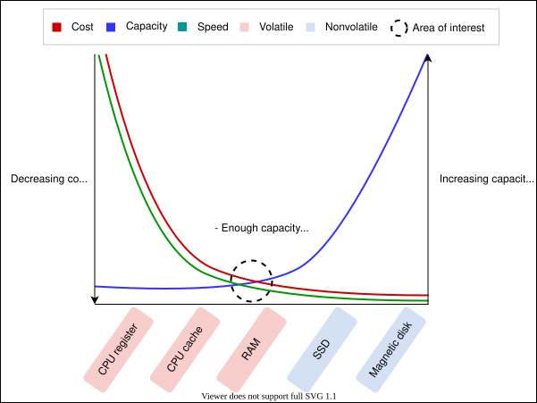
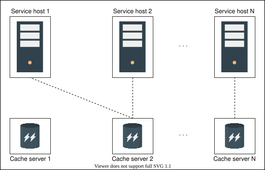
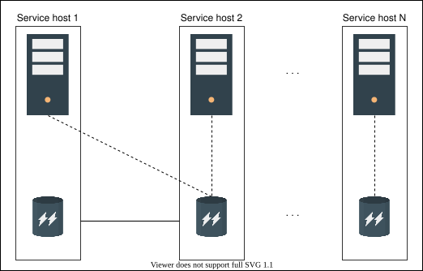
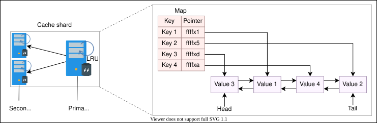
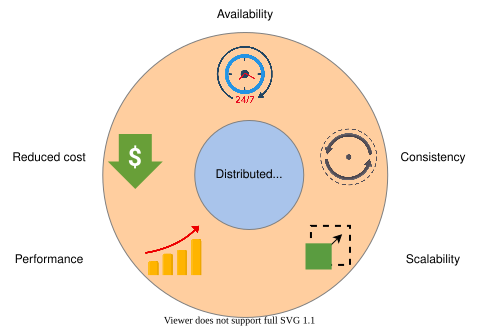
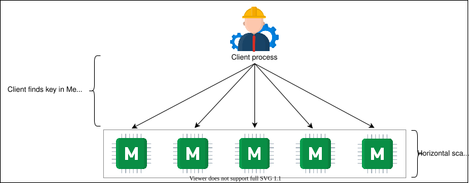
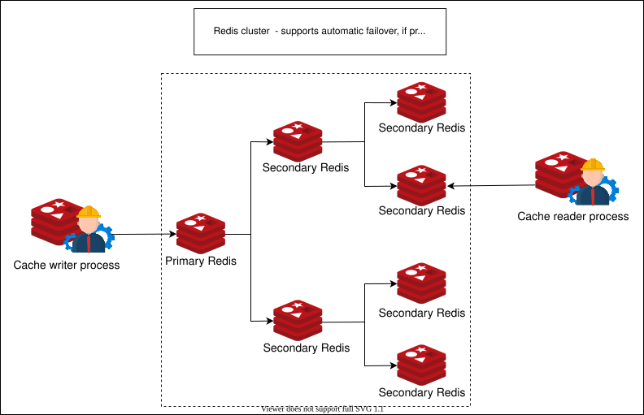
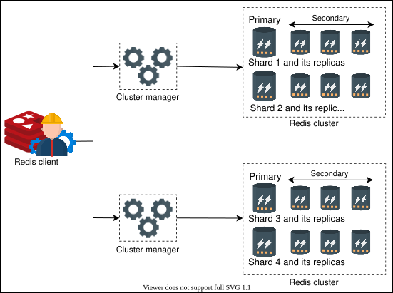
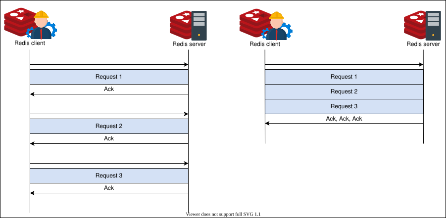

16. Distributed Cache
System Design: The Distributed Cache
System Design: The Distributed Cache
Learn the basics of a distributed cache.
Problem statement#
A typical system consists of the following components:
- It has a client that requests the service.
- It has one or more service hosts that entertain client requests.
- It has a database used by the service for data storage.
Under normal circumstances, this abstraction performs fine. However, as the number of users increases, the database queries also increase. And as a result, the service providers are overburdened, resulting in slow performance.
In such cases, a cache is added to the system to deal with performance deterioration. A cache is a temporary data storage that can serve data faster by keeping data entries in memory. Caches store only the most frequently accessed data. When a request reaches the serving host, it retrieves data from the cache (cache hit) and serves the user. However, if the data is unavailable in the cache (cache miss), the data will be queried from the database. Also, the cache is populated with the new value to avoid cache misses for the next time.
A cache is a nonpersistent storage area used to keep repeatedly read and written data, which provides the end user with lower latency. Therefore, a cache must serve data from a storage component that is fast, has enough storage, and is affordable in terms of dollar cost as we scale the caching service. The following illustration highlights the suitability of RAM as the raw building block for caching:

We understand the need for a cache and suitable storage hardware, but what is distributed cache? Let’s discuss this next.
What is a distributed cache?#
A distributed cache is a caching system where multiple cache servers coordinate to store frequently accessed data. Distributed caches are needed in environments where a single cache server isn’t enough to store all the data. At the same time, it’s scalable and guarantees a higher degree of availability.
Caches are generally small, frequently accessed, short-term storage with fast read time. Caches use the locality of reference principle.
Generally, distributed caches are beneficial in the following ways:
- They minimize user-perceived latency by precalculating results and storing frequently accessed data.
- They pre-generate expensive queries from the database.
- They store user session data temporarily.
- They serve data from temporary storage even if the data store is down temporarily.
- Finally, they reduce network costs by serving data from local resources.
Why distributed cache?#
When the size of data required in the cache increases, storing the entire data in one system is impractical. This is because of the following three reasons:
- It can be a potential single point of failure (SPOF).
- A system is designed in layers, and each layer should have its caching mechanism to ensure the decoupling of sensitive data from different layers.
- Caching at different locations helps reduce the serving latency at that layer.
In the table below, we describe how caching at different layers is performed through the use of various technologies. It’s important to note that key-value store components are used in various layers.
System Layer | Technology in Use | Usage |
Web | HTTP cache headers, web accelerators, key-value store, CDNs, and so on | Accelerate retrieval of static web content, and manage sessions |
Application | Local cache and key-value data store | Accelerate application-level computations and data retrieval |
Database | Database cache, buffers, and key-value data store | Reduce data retrieval latency and I/O load from database |
Apart from the three system layers above, caching is also performed at DNS and client-side technologies like browsers or end-devices.
How will we design distributed cache?#
We’ll divide the task of designing and reinforcing learning major concepts of distributed cache into five lessons:
- Background of Distributed Cache: It’s imperative to build the background knowledge necessary to make critical decisions when designing distributed caches. This lesson will revisit some basic but important concepts.
- High-level Design of a Distributed Cache: We’ll build a high-level design of a distributed cache in this lesson.
- Detailed Design of a Distributed Cache: We’ll identify some limitations of our high-level design and work toward a scalable, affordable, and performant solution.
- Evaluation of a Distributed Cache Design: This lesson will evaluate our design for various non-functional requirements, such as scalability, consistency, availability, and so on.
- Memcached versus Redis: We’ll discuss well-known industrial solutions, namely Memcached and Redis. We’ll also go through their details and compare their features to help us understand their potential use cases and how they relate to our design.
Let’s begin by exploring the background of the distributed cache in the next lesson.
Background of Distributed Cache
Background of Distributed Cache
Learn the fundamentals for designing a distributed cache.
The main goal of this chapter is to design a distributed cache. To achieve this goal, we should have substantial background knowledge, mainly on different reading and writing techniques. This lesson will help us build that background knowledge. Let’s look at the structure of this lesson in the table below
Section | Motivation |
Writing policies | Data is written to cache and databases. The order in which data writing happens has performance implications. We’ll discuss various writing policies to help decide which writing policy would be suitable for the distributed cache we want to design. |
Eviction policies | Since the cache is built on limited storage (RAM), we ideally want to keep the most frequently accessed data in the cache. Therefore, we’ll discuss different eviction policies to replace less frequently accessed data with most frequently accessed data. |
Cache invalidation | Certain cached data may get outdated. We’ll discuss different invalidation methods to remove stale or outdated entries from the cache in this section. |
Storage mechanism | A distributed storage has many servers. We’ll discuss important design considerations, such as which cache entry should be stored in which server and what data structure to use for storage. |
Cache client | A cache server stores cache entries, but a cache client calls the cache server to request data. We’ll discuss the details of a cache client library in this section. |
Writing policies#
Often, cache stores a copy (or part) of data, which is persistently stored in a data store. When we store data to the data store, some important questions arise:
- Where do we store the data first? Database or cache?
- What will be the implication of each strategy for consistency models?
The short answer is, it depends on the application requirements. Let’s look at the details of different writing policies to understand the concept better:
- Write-through cache: The write-through mechanism writes on the cache as well as on the database. Writing on both storages can happen concurrently or one after the other. This increases the write latency but ensures strong consistency between the database and the cache.
- Write-back cache: In the write-back cache mechanism, the data is first written to the cache and asynchronously written to the database. Although the cache has updated data, inconsistency is inevitable in scenarios where a client reads stale data from the database. However, systems using this strategy will have small writing latency.
- Write-around cache: This strategy involves writing data to the database only. Later, when a read is triggered for the data, it’s written to cache after a cache miss. The database will have updated data, but such a strategy isn’t favorable for reading recently updated data.
Quiz
A system wants to write data and promptly read it back. At the same time, we want consistency between the cache and database. Which writing policy is the optimal choice?
A)
Write-through cache
B)
Write-around cache
C)
Write-back cache
Eviction policies#
One of the main reasons caches perform fast is that they’re small. Small caches mean limited storage capacity. Therefore, we need an eviction mechanism to remove less frequently accessed data from the cache.
Several well-known strategies are used to evict data from the cache. The most well-known strategies include the following:
- Least recently used (LRU)
- Most recently used (MRU)
- Least frequently used (LFU)
- Most frequently used (MFU)
Other strategies like first in, first out (FIFO) also exist. The choice of each of these algorithms depends on the system the cache is being developed for.
Cache invalidation#
Apart from the eviction of less frequently accessed data, some data residing in the cache may become stale or outdated over time. Such cache entries are invalid and must be marked for deletion.
The situation demands a question: How do we identify stale entries?
Resolution of the problem requires storing metadata corresponding to each cache entry. Specifically, maintaining a time-to-live (TTL) value to deal with outdated cache items.
We can use two different approaches to deal with outdated items using TTL:
- Active expiration: This method actively checks the TTL of cache entries through a daemon process or thread.
- Passive expiration: This method checks the TTL of a cache entry at the time of access.
Each expired item is removed from the cache upon discovery.
Storage mechanism#
Storing data in the cache isn’t as trivial as it seems because the distributed cache has multiple cache servers. When we use multiple cache servers, the following design questions need to be answered:
- Which data should we store in which cache servers?
- What data structure should we use to store the data?
The above two questions are important design issues because they’ll decide the performance of our distributed cache, which is the most important requirement for us. We’ll use the following techniques to answer the questions above.
Hash function#
It’s possible to use hashing in two different scenarios:
- Identify the cache server in a distributed cache to store and retrieve data.
- Locate cache entries inside each cache server.
For the first scenario, we can use different hashing algorithms. However, consistent hashing or its flavors usually perform well in distributed systems because simple hashing won’t be ideal in case of crashes or scaling.
In the second scenario, we can use typical hash functions to locate a cache entry to read or write inside a cache server. However, a hash function alone can only locate a cache entry. It doesn’t say anything about managing data within the cache server. That is, it doesn’t say anything about how to implement a strategy to evict less frequently accessed data from the cache server. It also doesn’t say anything about what data structures are used to store the data within the cache servers. This is exactly the second design question of the storage mechanism. Let’s take a look at the data structure next.
Linked list#
We’ll use a doubly linked list. The main reason is its widespread usage and simplicity. Furthermore, adding and removing data from the doubly linked list in our case will be a constant time operation. This is because we either evict a specific entry from the tail of the linked list or relocate an entry to the head of the doubly linked list. Therefore, no iterations are required.
Note: Bloom filters are an interesting choice for quickly finding if a cache entry doesn’t exist in the cache servers. We can use bloom filters to determine that a cache entry is definitely not present in the cache server, but the possibility of its presence is probabilistic. Bloom filters are quite useful in large caching or database systems.
Sharding in cache clusters#
To avoid SPOF and high load on a single cache instance, we introduce sharding. Sharding involves splitting up cache data among multiple cache servers. It can be performed in the following two ways.
Dedicated cache servers#
In the dedicated cache servers method, we separate the application and web servers from the cache servers.
The advantages of using dedicated cache servers are the following:
- There’s flexibility in terms of hardware choices for each functionality.
- It’s possible to scale web/application servers and cache servers separately.
Apart from the advantages above, working as a standalone caching service enables other microservices to benefit from them—for example, Cache as a Service. In that case, the caching system will have to be aware of different applications so that their data doesn’t collide.

Co-located cache#
The co-located cache embeds cache and service functionality within the same host.
The main advantage of this strategy is the reduction in CAPEX and OPEX of extra hardware. Furthermore, with the scaling of one service, automatic scaling of the other service is obtained. However, the failure of one machine will result in the loss of both services simultaneously.

Cache client#
We discussed that the hash functions should be used for the selection of cache servers. But what entity performs these hash calculations?
A cache client is a piece of code residing in hosting servers that do (hash) computations to store and retrieve data in the cache servers. Also, cache clients may coordinate with other system components like monitoring and configuration services. All cache clients are programmed in the same way so that the same PUT, and GET operations from different clients return the same results. Some of the characteristics of cache clients are the following:
- Each cache client will know about all the cache servers.
- All clients can use well-known transport protocols like TCP or UDP to talk to the cache servers.
Point to Ponder
Question
What will be the behavior of cache clients to an access request if one of the cache servers is dead?
Conclusion#
In this lesson, we learned what distributed caches are and highlighted their significance in distributed systems. We also discussed different storage and eviction mechanisms for caches. Caches are vital for any distributed system and are located at different points within the design of a system. It’s important to understand how distributed caches can be designed as part of a large system.
High-level Design of a Distributed Cache
High-level Design of a Distributed Cache
Learn how we can develop a high-level design of a distributed cache.
In this lesson, we’ll learn to design a distributed cache. We’ll also discuss the trade-offs and design choices that can occur while we progress in our journey towards developing a solution.
Requirements#
Let us start by understanding the requirements of our solution.
Functional#
The following are the functional requirements:
- Insert data: The user of a distributed cache system must be able to insert an entry to the cache.
- Retrieve data: The user should be able to retrieve data corresponding to a specific key.

Non-functional requirements#
We’ll consider the following non-functional requirements:
-
High performance: The primary reason for the cache is to enable fast retrieval of data. Therefore, both the
insertandretrieveoperations must be fast. -
Scalability: The cache system should scale horizontally with no bottlenecks on an increasing number of requests.
-
High availability: The unavailability of the cache will put an extra burden on the database servers, which can also go down at peak load intervals. We also require our system to survive occasional failures of components and network, as well as power outages.
-
Consistency: Data stored on the cache servers should be consistent. For example, different cache clients retrieving the same data from different cache servers (primary or secondary) should be up to date.
-
Affordability: Ideally, the caching system should be designed from commodity hardware instead of an expensive supporting component within the design of a system.
API design#
The API design for this problem is sufficiently easy since there are only two basic operations.
Insertion#
The API call to perform insertion should look like this:
insert(key, value)
Parameter | Description |
| This is a unique identifier. |
| This is the data stored against a unique |
Retrieval#
The API call to retrieve data from the cache should look like this:
retrieve(key)
Parameter | Description |
| This returns the data stored against the |
Point to Ponder
Question
The API design of the distributed cache looks exactly like the key-value store. What are the possible differences between a key-value store and a distributed cache?
Design considerations#
Before designing the distributed cache system, it’s important to consider some design choices. Each of these choices will be purely based on our application requirements. However, we can highlight some key differences here:
Storage hardware#
If our data is large, we may require sharding and therefore use shard servers for cache partitions. Should these shard servers be specialized or commodity hardware? Specialized hardware will have good performance and storage capacity, but it will cost more. We can build a large cache from commodity servers. In general, the number of shard servers will depend on the cache’s size and access frequency.
Furthermore, we can consider storing our data on the secondary storage of these servers for persistence while we still serve data from RAM. Secondary storage may be used in cases where a reboot happens, and cache rebuilding takes a long time. Persistence, however, may not be a requirement in a cache system if there’s a dedicated persistence layer, such as a database.
Data structures#
A vital part of the design has to be the speed of accessing data. Hash tables are data structures that take a constant time on average to store and retrieve data. Furthermore, we need another data structure to enforce an eviction algorithm on the cached data. In particular, linked lists are a good option (as discussed in the previous lesson).
Also, we need to understand what kind of data structures a cache can store. Even though we discussed in the API design section that we’ll use strings for simplicity, it’s possible to store different data structures or formats, like hash maps, arrays, sets, and so on, within the cache. In the next lesson, we’ll see a practical example of such a cache.
Cache client#
It’s the client process or library that places the insert and retrieve calls. The location of the client process is a design issue. For example, it’s possible to place the client process within a serving host if the cache is for internal use only. Otherwise, in the case where the caching system is provided as a service for external use, a dedicated cache client can send users’ requests to the cache servers.
Writing policy#
The writing strategy over the cache and database has consistency implications. In general, there’s no optimal choice, but depending on our application, the preference of writing policy is significantly important.
Eviction policy#
By design, the cache provides low-latency reads and writes. To achieve this, data is often served from RAM memory. Usually, we can’t put all the data in the cache due to the limited size of the cache as compared to the full dataset. So, we need to carefully decide what stays in the cache and how to make room for new entries.
With the addition of new data, some of the existing data may have to be evicted from the cache. However, choosing a victim entry depends on the eviction policy. Numerous eviction policies exist, but the choice again depends on the application using it. For instance, least recently used (LRU) can be a good choice for social media services where recently uploaded content will likely get the most views.
Apart from the details in the sections above, optimizing the time-to-live (TTL) value can play an essential role in reducing the number of cache misses.
High-level design#
The following figure depicts our high-level design:

The main components in this high-level design are the following:
-
Cache client: This library resides in the service application servers. It holds all the information regarding cache servers. The cache client will choose one of the cache servers using a hash and search algorithm for each incoming
insertandretrieverequest. All the cache clients should have a consistent view of all the cache servers. Also, the resolution technique to move data to and from the cache servers should be the same. Otherwise, different clients will request different servers for the same data. -
Cache servers: These servers maintain the cache of the data. Each cache server is accessible by all the cache clients. Each server is connected to the database to store or retrieve data. Cache clients use TCP or UDP protocol to perform data transfer to or from the cache servers. However, if any cache server is down, requests to those servers are resolved as a missed cache by the cache clients.
Detailed Design of a Distributed Cache
Detailed Design of a Distributed Cache
Let's understand the detailed design of a distributed cache.
This lesson will identify some shortcomings of the high-level design of a distributed cache and improve the design to cover the gaps. Let’s get started.
Find and remove limitations#
Before we get to the detailed design, we need to understand and overcome some challenges:
- There’s no way for the cache client to realize the addition or failure of a cache server.
- The solution will suffer from the problem of single point of failure (SPOF) because we have a single cache server for each set of cache data. Not only that, if some of the data on any of the cache servers is frequently accessed (generally referred to as a hotkey problem), then our performance will also be slow.
- Our solution also didn’t highlight the internals of cache servers. That is, what kind of data structures will it use to store and what eviction policy will it use?
Maintain cache servers list#
Let’s start by resolving the first problem. We’ll take incremental steps toward the best possible solution. Let’s look at the following slides to get an idea of each of the solutions described below:
- Solution 1: It’s possible to have a configuration file in each of the service hosts where the cache clients reside. The configuration file will contain the updated health and metadata required for the cache clients to utilize the cache servers efficiently. Each copy of the configuration service can be updated through a push service by any DevOps tool. The main problem with this strategy is that the configuration file will have to be manually updated and deployed through some DevOps tools.
- Solution 2: We can store the configuration file in a centralized location that the cache clients can use to get updated information about cache servers. This solves the deployment issue, but we still need to manually update the configuration file and monitor the health of each server.
- Solution 3: An automatic way of handling the issue is to use a configuration service that continuously monitors the health of the cache servers. In addition to that, the cache clients will get notified when a new cache server is added to the cluster. When we use this strategy, no human intervention or monitoring will be required in case of failures or the addition of new nodes. Finally, the cache clients obtain the list of cache servers from the configuration service.
The configuration service has the highest operational cost. At the same time, it’s a complex solution. However, it’s the most robust among all the solutions we presented.
Improve availability#
The second problem relates to cache unavailability if the cache servers fail. A simple solution is the addition of replica nodes. We can start by adding one primary and two backup nodes in a cache shard. With replicas, there’s always a possibility of inconsistency. If our replicas are in close proximity, writing over replicas is performed synchronously to avoid inconsistencies between shard replicas. It’s crucial to divide cache data among shards so that neither the problem of unavailability arises nor any hardware is wasted.
This solution has two main advantages:
- There’s improved availability in case of failures.
- Hot shards can have multiple nodes (primary-secondary) for reads.
Not only will such a solution improve availability, but it will also add to the performance.
Internals of cache server#
Each cache client should use three mechanisms to store and evict entries from the cache servers:
- Hash map: The cache server uses a hash map to store or locate different entries inside the RAM of cache servers. The illustration below shows that the map contains pointers to each cache value.
- Doubly linked list: If we have to evict data from the cache, we require a linked list so that we can order entries according to their frequency of access. The illustration below depicts how entries are connected using a doubly linked list.
- Eviction policy: The eviction policy depends on the application requirements. Here, we assume the least recently used (LRU) eviction policy.
A depiction of a sharded cluster along with a node’s data structure is provided below:

It’s evident from the explanation above that we don’t provide a
deleteAPI. This is because the eviction (through eviction algorithm) and deletion (of expired entries through TTL) is done locally at cache servers. Nevertheless, situations can arise where thedeleteAPI may be required. For example, when we delete a recently added entry from the database, it should result in the removal of items from the cache for the sake of consistency.
Detailed design#
We’re now ready to formalize the detailed design after resolving each of the three previously highlighted problems. Look at the detailed design below:

Let’s summarize the proposed detailed design in a few points:
- The client’s requests reach the service hosts through the load balancers where the cache clients reside.
- Each cache client uses consistent hashing to identify the cache server. Next, the cache client forwards the request to the cache server maintaining a specific shard.
- Each cache server has primary and replica servers. Internally, every server uses the same mechanisms to store and evict cache entries.
- Configuration service ensures that all the clients see an updated and consistent view of the cache servers.
- Monitoring services can be additionally used to log and report different metrics of the caching service.
Note: An important aspect of the design is that cache entries are stored and retrieved from RAM. We discussed the suitability of RAM for designing a caching system in the previous lesson.
Point to Ponder
Question
While consistent hashing is a good choice, it may result in unequal distribution of data, and certain servers may get overloaded. How do we resolve this problem?
Evaluation of a Distributed Cache's Design
Evaluation of a Distributed Cache's Design
Let's evaluate our design in the context of our requirements.
We'll cover the following
Let’s evaluate our proposed design according to the design requirements.
High performance#
Here are some design choices we made that will contribute to overall good performance:
- We used consistent hashing. Finding a key under this algorithm requires a time complexity of O(log(N)), where N represents the number of cache shards.
- Inside a cache server, keys are located using hash tables that require constant time on average.
- The LRU eviction approach uses a constant time to access and update cache entries in a doubly linked list.
- The communication between cache clients and servers is done through TCP and UDP protocols, which is also very fast.
- Since we added more replicas, these can reduce the performance penalties that we have to face if there’s a high request load on a single machine.
- An important feature of the design is adding, retrieving, and serving data from the RAM. Therefore, the latency to perform these operations is quite low.
Note: A critical parameter for high performance is the selection of the eviction algorithm because the number of cache hits and misses depends on it. The higher the cache hit rate, the better the performance.
To get an idea of how important the eviction algorithm is, let’s assume the following:
- Cache hit service time (99.9th percentile): 5 ms
- Cach miss service time (99.9th percentile): 30 ms (this includes time to get the data from the database and set the cache)
Let’s assume we have a 10% cache miss rate using the most frequently used (MFU) algorithm, whereas we have a 5% cache miss rate using the LRU algorithm. Then, we use the following formula:
EAT = Ratiohit x Timehit + Ratiomiss x Timemiss
Here, this means the following:
EAT: Effective access time.
Ratiohit: The percentage of times a cache hit will occur.
Ratiomiss: The percentage of times a cache miss will occur.
Timehit: Time required to serve a cache hit.
Timemiss: Time required to serve a cache miss.
For MFU, we see the following:
EAT = 0.90 x 5 milliseconds + 0.10 x 30 milliseconds = 0.0045 + 0.003 = 0.0075 = 7.5 milliseconds
For LRU, we see the following:
EAT = 0.95 x 5 milliseconds + 0.05 x 30 milliseconds = 0.00475 + 0.0015 = 0.00625 = 6.25 milliseconds.
The numbers above highlight the importance of the eviction algorithm to increase the cache hit rate. Each application should conduct an empirical study to determine the eviction algorithm that gives better results for a specific workload.
Scalability#
We can create shards based on requirements and changing server loads. While we add new cache servers to the cluster, we also have to do a limited number of rehash computations, thanks to consistent hashing.
Adding replicas reduces the load on hot shards. Another way to handle the hotkeys problem is to do further sharding within the range of those keys. Although the scenario where a single key will become hot is rare, it’s possible for the cache client to devise solutions to avoid the single hotkey contention issue. For example, cache clients can intelligently avoid such a situation that a single key becomes a bottleneck, or we can use dynamic replication for specific keys, and so on. Nonetheless, the solutions are complex and beyond the scope of this lesson.

High availability#
We have improved the availability through redundant cache servers. Redundancy adds a layer of reliability and fault tolerance to our design. We also used the leader-follower algorithm to conveniently manage a cluster shard. However, we haven’t achieved high availability because we have two shard replicas, and at the moment, we assume that the replicas are within a data center.
It’s possible to achieve higher availability by splitting the leader and follower servers among different data centers. But such high availability comes at a price of consistency. We assumed synchronous writes within the same data center. But synchronous writing for strong consistency in different data centers has a serious performance implication that isn’t welcomed in caching systems. We usually use asynchronous replication across data centers.
For replication within the data center, we can get strong consistency with good performance. We can compromise strong consistency across data center replication to achieve better availability (see CAP and PACELC theorems).
Consistency#
It’s possible to write data to cache servers in a synchronous or asynchronous mode. In the case of caching, the asynchronous mode is favored for improved performance. Consequently, our caching system suffers from inconsistencies. Alternatively, strong consistency comes from synchronous writing, but this increases the overall latency, and the performance takes a hit.
Inconsistency can also arise from faulty configuration files and services. Imagine a scenario where a cache server is down during a write operation, and a read operation is performed on it just after its recovery. We can avoid such scenarios for any joining or rejoining server by not allowing it to serve requests until it’s reasonably sure that it’s up to date.
Affordability#
Our proposed design has a low cost because it’s feasible and practical to create such a system using commodity hardware.
Points to Ponder
Question 1
What happens if the leader node fails in the leader-follower protocol?
1 of 3
Summary#
We studied the basics of the cache and designed a distributed cache that has a good level of availability, high performance, high scalability, and low cost. Our mechanism maintains high availability using replicas, though if all replicas are in one data center, such a scheme won’t tackle full data center failures. Now that we’ve learned about the basics of design, let’s explore popular open-source frameworks like Memcached and Redis.
Memcached versus Redis
Memcached versus Redis
Let's compare Memcached and Redis.
Introduction#
This lesson will discuss some of the widely adopted real-world implementations of a distributed cache. Our focus will be on two well-known open-source frameworks: Memcached and Redis. They’re highly scalable, highly performant, and robust caching tools. Both of these techniques follow the client-server model and achieve a latency of sub-millisecond. Let’s discuss each one of them and then compare their usefulness.
Memcached#
Memcached was introduced in 2003. It’s a key-value store distributed cache designed to store objects very fast. Memcached stores data in the form of a key-value pair. Both the key and the value are strings. This means that any data that has been stored will have to be serialized. So, Memcached doesn’t support and can’t manipulate different data structures.
Memcached has a client and server component, each of which is necessary to run the system. The system is designed in a way that half the logic is encompassed in the server, whereas the other half is in the client. However, each server follows the shared-nothing architecture. In this architecture, servers are unaware of each other, and there’s no synchronization, data sharing, and communication between the servers.
Due to the disconnected design, Memcached is able to achieve almost a deterministic query speed (O(1)) serving millions of keys per second using a high-end system. Therefore, Memcached offers a high throughput and low latency.

As evident from the design of a typical Memcached cluster, Memcached scales well horizontally. The client process is usually maintained with the service host that also interacts with the authoritative storage (back-end database).
Facebook and Memcached#
The data access pattern in Facebook requires frequent reads and updates because views are presented to the users on the fly instead of being generated ahead of time. Because Memcached is simple, it was an easy choice for the solution because Memcached started developing in 2003 whereas Facebook was developed in 2004. In fact, in some cases, Facebook and Memcached teams worked together to find solutions.
Some of the simple commands of Memcached include the following:
get <key_1> <key_2> <key_3> ...
set <key> <value> ...
delete <key>[<time>] ...
At Facebook, Memcached sits between the MySQL database and the web layer that uses roughly 28 TeraBytes of RAM spread across more than 800 servers (as of 2013). By an approximation of least recently used (LRU) eviction policy, Facebook is able to achieve a cache hit rate of 95%.
The following illustration shows the high-level design of caching architecture at Facebook. As we can see, out of a total of 50 million requests made by the web layer, only 2.5 million requests reach the persistence layer.

Redis#
Redis is a data structure store that can be used as a cache, database, and message broker. It offers rich features at the cost of additional complexity. It has the following features:
- Data structure store: Redis understands the different data structures it stores. We don’t have to retrieve data structures from it, manipulate them, and then store them back. We can make in-house changes that save both time and effort.
- Database: It can persist all the in-memory blobs on the secondary storage.
- Message broker: Asynchronous communication is a vital requirement in distributed systems. Redis can translate millions of messages per second from one component to another in a system.
Redis provides a built-in replication mechanism, automatic failover, and different levels of persistence. Apart from that, Redis understands Memcached protocols, and therefore, solutions using Memcached can translate to Redis. A particularly good aspect of Redis is that it separates data access from cluster management. It decouples data and controls the plane. This results in increased reliability and performance. Finally, Redis doesn’t provide strong consistency due to the use of asynchronous replication.

Redis cluster#
Redis has built-in cluster support that provides high availability. This is called Redis Sentinel. A cluster has one or more Redis databases that are queried using multithreaded proxies. Redis clusters perform automatic sharding where each shard has primary and secondary nodes. However, the number of shards in a database or node is configurable to meet the expectations and requirements of an application.
Each Redis cluster is maintained by a cluster manager whose job is to detect failures and perform automatic failovers. The management layer consists of monitoring and configuration software components.

Pipelining in Redis#
Since Redis uses a client-server model, each request blocks the client until the server receives the result. A Redis client looking to send subsequent requests will have to wait for the server to respond to the first request. So, the overall latency will be higher.
Redis uses pipelining to speed up the process. Pipelining is the process of combining multiple requests from the client side without waiting for a response from the server. As a result, it reduces the number of RTT spans for multiple requests.

The process of pipelining reduces the latency through RTT and the time to do socket level I/O. Also, mode switching through system calls in the operating system is an expensive operation that’s reduced significantly via pipelining. Pipelining the commands from the client side has no impact on how the server processes these requests.
For example, two requests pipelined by the client reach the server, and the server can’t entertain the second. The server provides a result for the first and returns an error for the second. The client is independent in batching similar commands together to achieve maximum throughput.
Note: Pipelining improves the latency to a minimum of five folds if both the client and server are on the same machine. The request is sent on a loopback address (
127.0.0.1). The true power of pipelining is highlighted in systems where requests are sent to distant machines.
Memcached versus Redis#
Even though Memcached and Redis both belong to the NoSQL family, there are subtle aspects that set them apart:
- Simplicity: Memcached is simple, but it leaves most of the effort for managing clusters left to the developers of the cluster. This, however, means finer control using Memcached. Redis, on the other hand, automates most of the scalability and data division tasks.
- Persistence: Redis provides persistence by properties like append only file (AOF) and Redis database (RDB) snapshot. There’s no persistence support in Memcached. But this limitation can be catered to by using third-party tools.
- Data types: Memcached stores objects, whereas Redis supports strings, sorted sets, hash maps, bitmaps, and hyper logs. However, the maximum key or value size is configurable.
- Memory usage: Both tools allow us to set a maximum memory size for caching. Memcached uses the slab allocation method for reducing fragmentation. However, when we update the existing entries’ size or store many small objects, there may be a wastage of memory. Nonetheless, there are configuration workarounds to resolve such issues.
- Multithreading: Redis runs as a single process using one core, whereas Memcached can efficiently use multicore systems with multithreading technology. We could argue that Redis was designed to be a single-threaded process that reduces the complexity of multithreaded systems. Nonetheless, multiple Redis processes can be executed for concurrency. At the same time, Redis has improved over the years by tweaking its performance. Therefore, Redis can store small data items efficiently. Memcached can be the right choice for file sizes above 100 K.
- Replication: As stated before, Redis automates the replication process via few commands, whereas replication in Memcached is again subject to the usage of third-party tools. Architecturally, Memcached can scale well horizontally due to its simplicity. Redis provides scalability through clustering that’s considerably complex.
The table below summarizes some of the main differences and common features between Memcached and Redis:
Feature | Memcached | Redis |
Low latency | Yes | Yes |
Persistence | Possible via third-party tools | Multiple options |
Multilanguage support | Yes | Yes |
Data sharding | Possible via third-party tools | Built-in solution |
Ease of use | Yes | Yes |
Multithreading support | Yes | No |
Support for data structure | Objects | Multiple data structures |
Support for transaction | No | Yes |
Eviction policy | LRU | Multiple algorithms |
Lua scripting support | No | Yes |
Geospatial support | No | Yes |
To summarize, Memcached is preferred for smaller, simpler read-heavy systems, whereas Redis is useful for systems that are complex and are both read- and write-heavy.
Points to Ponder
Question 1
Based on the implementation details, which of the two frameworks (Memcached or Redis) has a striking similarity with the distributed cache that we designed in the previous lesson?
1 of 3
Conclusion#
It’s impossible to imagine high-speed large-scale solutions without the use of a caching system. In this chapter, we covered the need for a caching system and its fundamental details, and we orchestrated a basic distributed cache system. We also familiarized ourselves with the design and features of two of the most well-known caching frameworks.